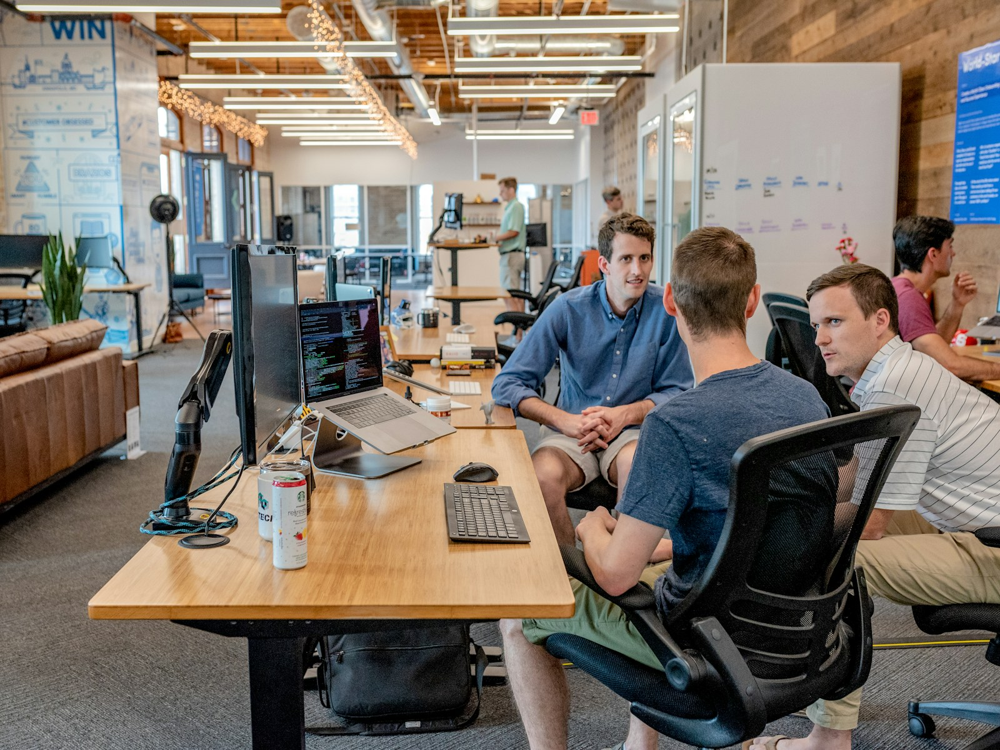

圍繞日常營運，整理合適的支援。
依照品牌現況與工作需求，討論適合的協作範圍。
內容窗口
整理品牌主張與產品資料，建立可供不同渠道使用的內容基礎。
店舖窗口
按渠道特點安排分類、頁面與商品資訊，關注顧客的瀏覽與理解過程。
營運窗口
彙整日常任務與回饋，建立更新、確認及跨團隊交接的工作節奏。
把工作安排，逐步推進到位。
建立共識
討論品牌目標與各渠道現有情況。
對齊內容
整理共用素材與需要單獨處理的資訊。
協作運行
把各方任務接起來，持續回顧執行細節。
渠道可以不同，品牌方向保持一致。
不同平台有不同的節奏與資訊要求。我們協助品牌把共同的產品資料與各渠道的工作安排分開整理，讓團隊清楚哪些內容需要一致，哪些地方需要因地調整。
Wyton Holdings Limited
討論合作開始合作前的幾個問題。
可否只選其中一個渠道？
可以先由單一渠道或工作環節開始，確認配合方式後再討論其他需求。
如何保持品牌內容一致？
建立共用資訊基礎與確認流程，更新時同步檢查受影響的頁面與渠道。